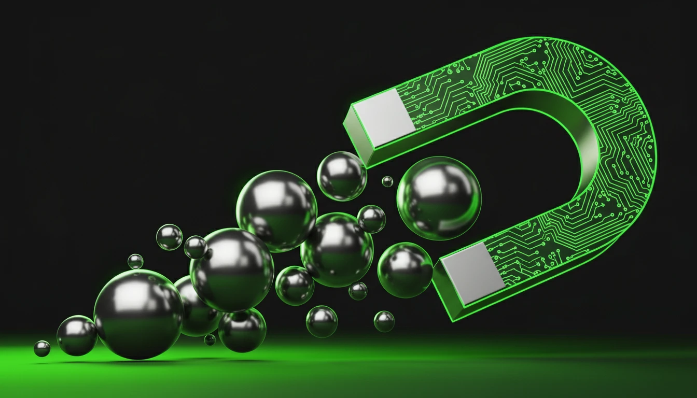

What is Lead Generation? The Ultimate Guide to Growing Your Business (2025)

Every business needs customers to survive. But customers don't just appear out of thin air. They start as strangers, become prospects, and eventually turn into paying clients. The process of finding these people and getting them interested in your business is called Lead Generation.
Without a solid lead generation strategy, your sales team will have no one to call, and your revenue will stall. In this guide, we'll break down exactly what lead generation is, why it's critical, and how you can build a machine that brings you customers on autopilot.
What is a Lead?
A lead is any person who indicates interest in a company's product or service in some way, shape, or form. Leads are typically heard from after opening communication (by submitting personal information for an offer, trial, or subscription) instead of getting a random cold call from someone who purchased their contact information.
Types of Leads
Not all leads are created equal. Here is how we classify them:
- Marketing Qualified Lead (MQL): Contacts who have engaged with your marketing team's efforts but aren't ready to receive a sales call. Example: Someone who downloaded an ebook.
- Sales Qualified Lead (SQL): Contacts who have taken actions that expressly indicate their interest in becoming a paying customer. Example: Someone who filled out a "Contact Us" form.
- Product Qualified Lead (PQL): Contacts who have used your product and taken actions that indicate interest in becoming a paying customer. Example: A free trial user who hits a usage limit.
The Lead Generation Process
How does a stranger become a lead? It usually follows a simple path:
- Attract: A visitor discovers your business through one of your marketing channels (website, blog, social media).
- Convert: That visitor clicks on a Call-to-Action (CTA) ? an image, button, or message that encourages them to take some sort of action.
- Close: The CTA takes them to a landing page, where they fill out a form in exchange for a valuable offer (content, demo, etc.).
- Delight: Once you have their info, you nurture them until they are ready to buy.
Inbound vs. Outbound Lead Generation
There are two main ways to generate leads:
Inbound Lead Gen (The Magnet)
You create helpful content and experiences that pull people toward your company and product. You aren't interrupting them; you are helping them.
- Content Marketing (Blogs, Videos)
- SEO
- Social Media
Outbound Lead Gen (The Megaphone)
You push your message out to people whether they asked for it or not. It's more traditional but can still be effective if targeted correctly.
- Cold Calling
- Direct Mail
- Display Ads
Top Lead Generation Strategies for 2025
The landscape is changing. Here is what works now:
- Interactive Content: Quizzes and calculators get higher conversion rates than static PDFs.
- Video Marketing: Short-form video (TikTok, Reels) is a massive discovery engine.
- LinkedIn Personal Branding: For B2B, building a personal brand on LinkedIn is the most effective way to generate high-quality leads.
Conclusion
Lead generation is the lifeblood of any business. It's not a one-time event but a continuous process of testing, learning, and optimizing. Start by understanding your audience, creating value for them, and making it easy for them to raise their hand and say, "I'm interested."
Want to learn how to turn these leads into sales? Check out our guide on What is a Sales Funnel? to see the next step in the journey.